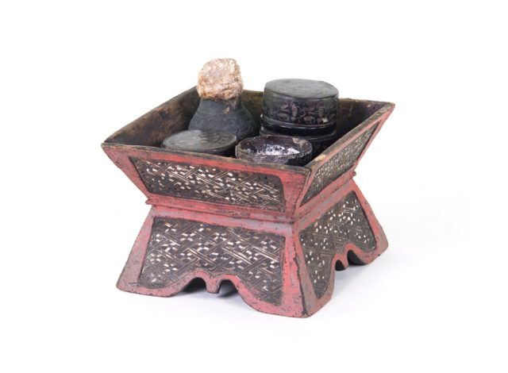

The Thai Receptacle for Betel reflects the significance of betel chewing in Thai culture, especially during the Ayutthaya and early Rattanakosin periods. Betel was commonly chewed as
a social activity, and receptacles for holding betel leaves, areca nuts, and lime paste became symbols of hospitality
and social status.
These receptacles were often beautifully crafted from materials such as wood, silver, or brass, and decorated with
intricate designs. Northern Thai betel sets frequently featured delicate engravings, lacquerwork, and mother-of-pearl
inlay, showcasing the craftsmanship of the region. While betel chewing has largely faded from modern Thai society,
these receptacles remain treasured cultural artifacts, embodying the tradition, hospitality, and artistry of past
generations.
Thai Receptacle for Betel
